The things that happened outside the lab: trips, races, injuries, classes, and the people I did them with. Newest first.
July 2026MIT Cardinal & Gray soccer ID camp
Breaking my femur, and learning to move again
In July I broke my femur at MIT’s Cardinal & Gray soccer ID camp. I came home needing surgery, and suddenly getting into a car, getting out of bed and taking a shower were all problems I had to solve.
For nearly two months I needed help with movements that used to be automatic. I’d spent years designing a simulator with six degrees of freedom, and now I was negotiating for one. Design, photography and sim racing usually get me out of bed, and for a while even they couldn’t.
My parents carried a lot of that time, literally. Watching them help me, I started thinking about the person doing the lifting as well as the person being lifted. I sketched a spring-assisted leg support in Fusion that I couldn’t build while recovering, and I pitched a vacuum-stiffened transfer mat as a possible Electronics Club project. Neither one is finished, but they’re how I started making things again.
Still on crutches, I made it to an Indy 500 event. Being around the cars again was exactly what I needed.
At the Indy 500, still on crutches.
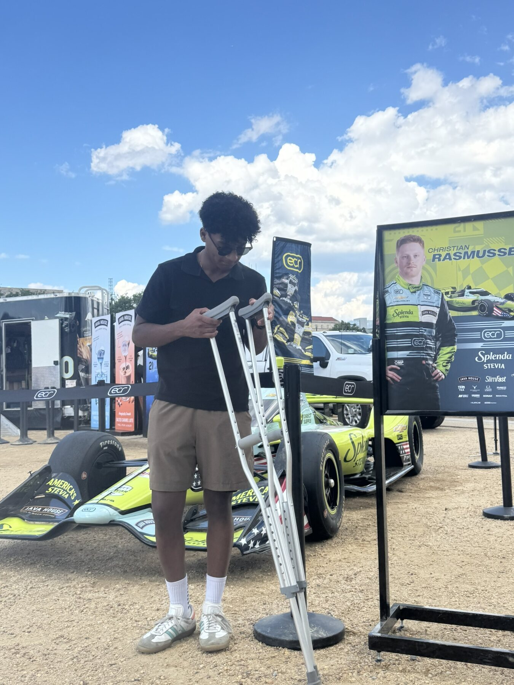
In the display area at the Indy 500.
June 2026West Virginia
Nine hours to find a place to camp
Austen and I drove about three hours to West Virginia, picked a mountain, and spent the day exploring it. We didn’t have a campsite picked out. We kept hiking and scouting for somewhere to stay, and it took about nine hours before we found a spot near the top.
It was dispersed camping, away from any campground. No cell service, no water source at the peak, and we were in bear country with bear spray on our belts. We cooked over a wood fire and slept up there. Waking up to that view made the nine hours worth it.
Our view that evening, June 24, 2026.
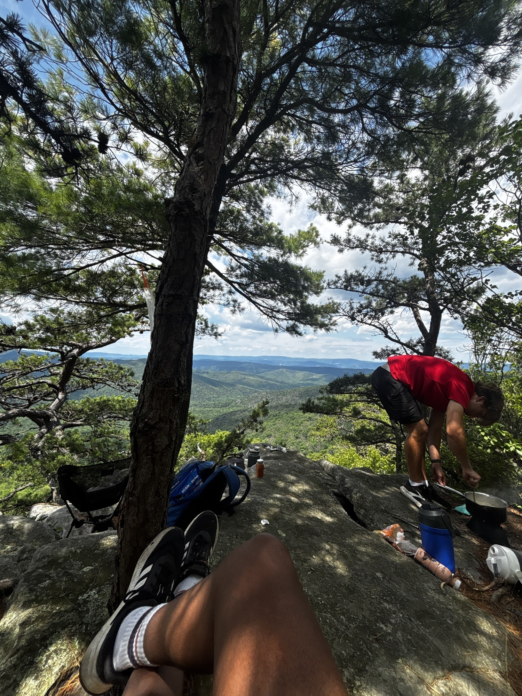
Back out on the mountain the next day.
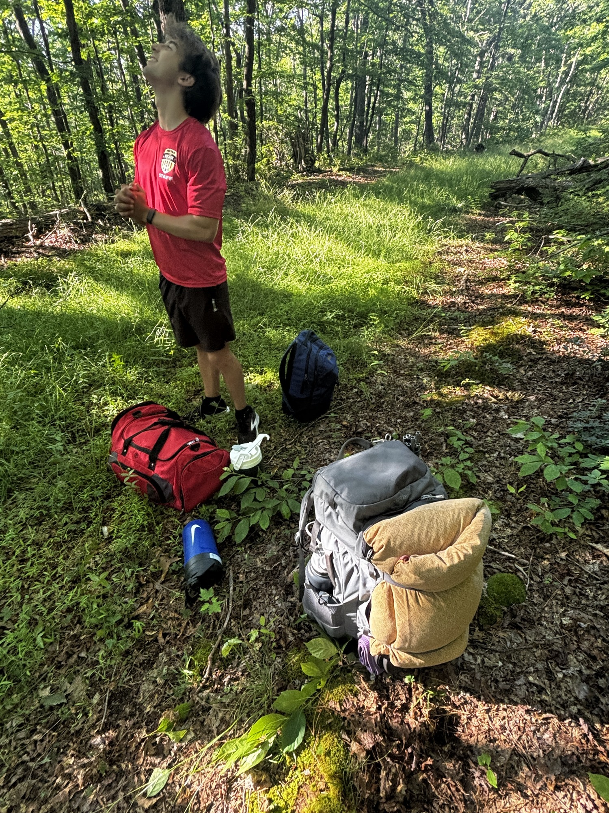
Scouting for a spot.
BWI to Annapoliswith Austen and Ayaan
Riding the BWI Trail to Annapolis
Austen, Ayaan and I rode from BWI all the way down to Annapolis. The BWI Trail loops around the airport and connects to the B&A Trail, which runs almost straight to the water, so you can do the whole thing without riding on a major road.
It’s a long day on a bike. The fun part was that nobody really trained for it. We just packed water, picked a time to leave, and kept each other going when the legs started to complain. Getting to Annapolis and seeing the boats felt like we’d actually earned it.
Looking down at the Severn River from the bridge into Annapolis.
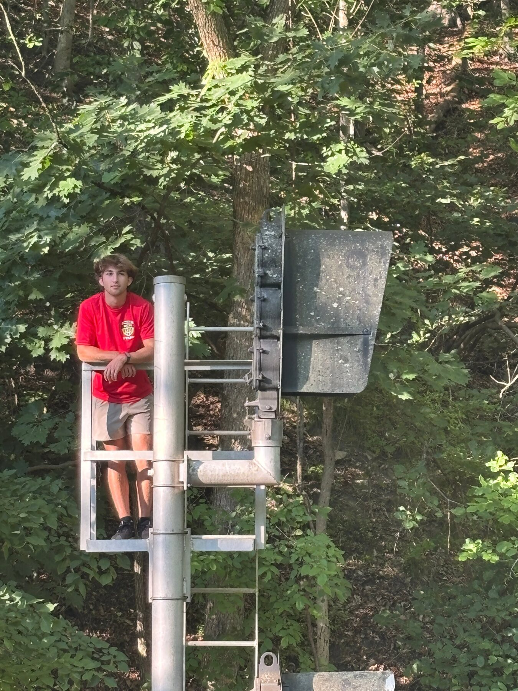
A stop along the trail.
July 2025Silverstone, England
The British Grand Prix, in the rain
I’ve watched Formula 1 for years, mostly from a sim rig or a couch. Being at Silverstone for the British Grand Prix with my family was completely different. You feel the cars in your chest before you see them.
Race day was wet, and I spent most of it trying to keep my camera dry while getting shots through the spray. A wet race is chaos for the drivers and a gift for photographers: the rooster tails behind each car turn every frame into a story. Some of my favorite photos I’ve ever taken came from that day.
Through the spray on the straight.A Ferrari side-on.The curbing leading back to the car.
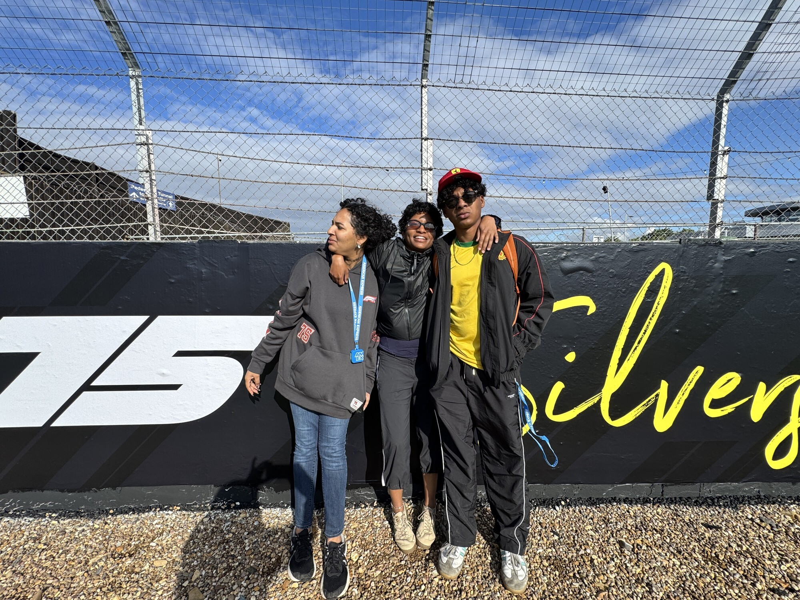
At Silverstone with family.
2023MIT Splash
Building an underwater robot at MIT Splash
MIT Splash is a weekend where MIT students teach classes to middle and high schoolers on almost anything. I signed up for an underwater robotics class, and it ended up being one of my favorite weekends.
We built a small underwater robot in teams with people I’d met that morning. What I enjoyed most was how different everyone was. We came from different schools and backgrounds, and each person noticed different problems. That mix made our robot better than anything I would have built alone, and it’s a big part of why I like working on teams now.
Our underwater robot from the MIT Splash class.
April 2022Porsche Experience Center Atlanta
The 919, and a ride I’ll never forget
My dad and I went to the Porsche Experience Center in Atlanta, and I had one goal: see the 919 Hybrid. I’d watched it on TV and at Le Mans, and it was my favorite car. To this day it holds the fastest lap ever around the Nürburgring Nordschleife. It’s iconic, and getting to stand next to it in person was surreal.
Then, as a treat, I got a ride-along in a 911 Carrera with one of their track drivers. He flew around that track. I genuinely had no idea how hard the g-forces in a race car were until that day. Braking pushed me into the belts, the corners pushed me into the door, and he was completely calm the whole time.
That ride changed how I think about my own projects. When I build things for my sim rig, like the seatbelt tensioner or the motion platform, I’m chasing that feeling: the car pushing back on you.
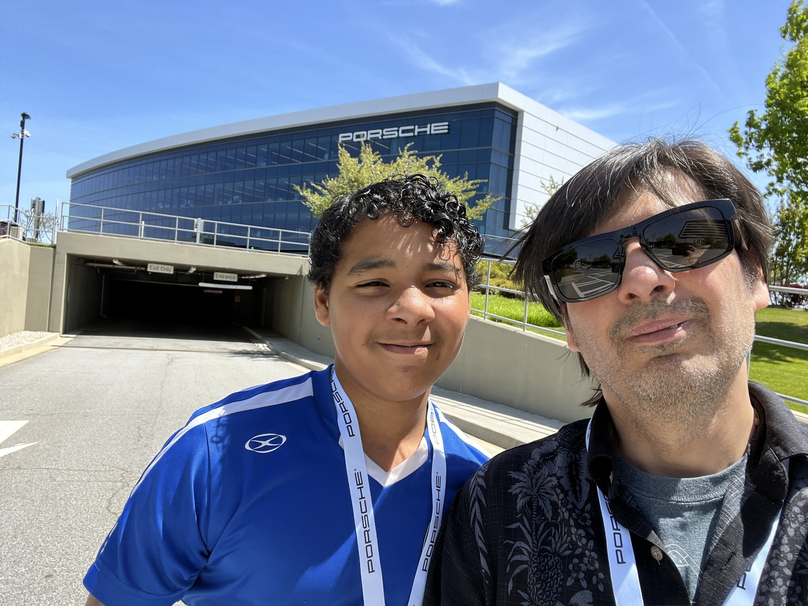
Outside the Porsche Experience Center.
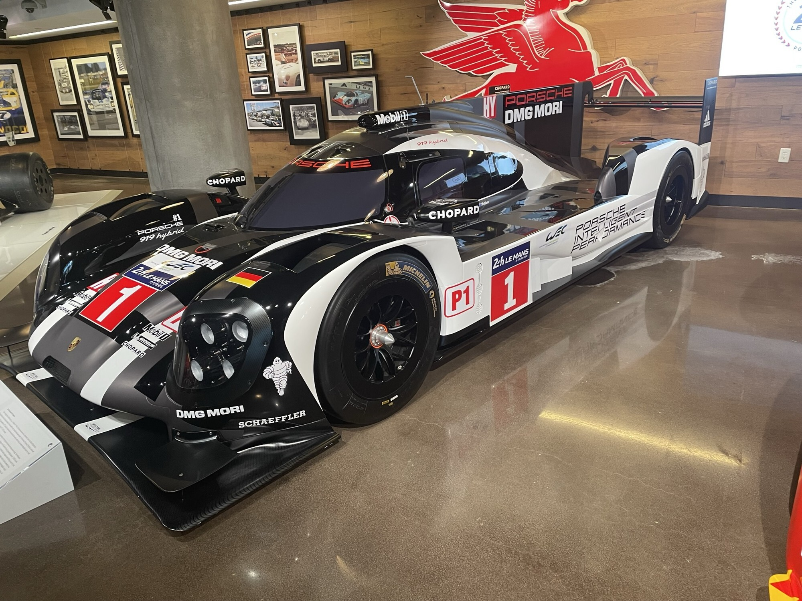
A race car on display.Beside a Porsche at the Experience Center.
Summer 2022CTY · Santa Cruz and Dickinson
Two summers at CTY
I spent one summer at CTY at Dickinson College and another at UC Santa Cruz. My sister Bia flew out with me to Santa Cruz. It was my first time being that far from home on my own, and I slept through most of the flight.
I made friends at both: Sam and Declan at Dickinson, and Bretton, Jusin and David at Santa Cruz. CTY was the first place I was surrounded by people who got as excited about ideas as I did.
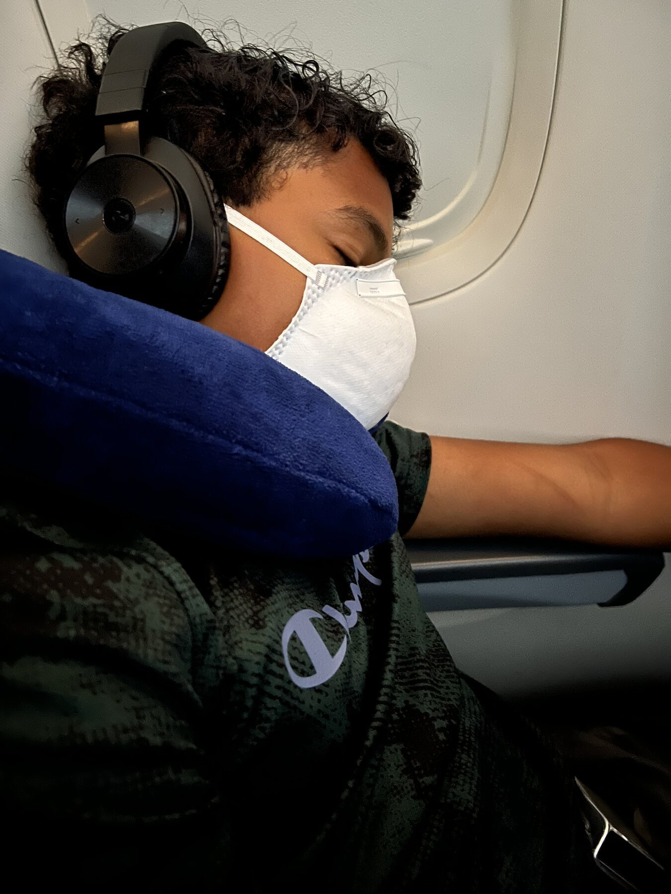
On the flight to Santa Cruz.
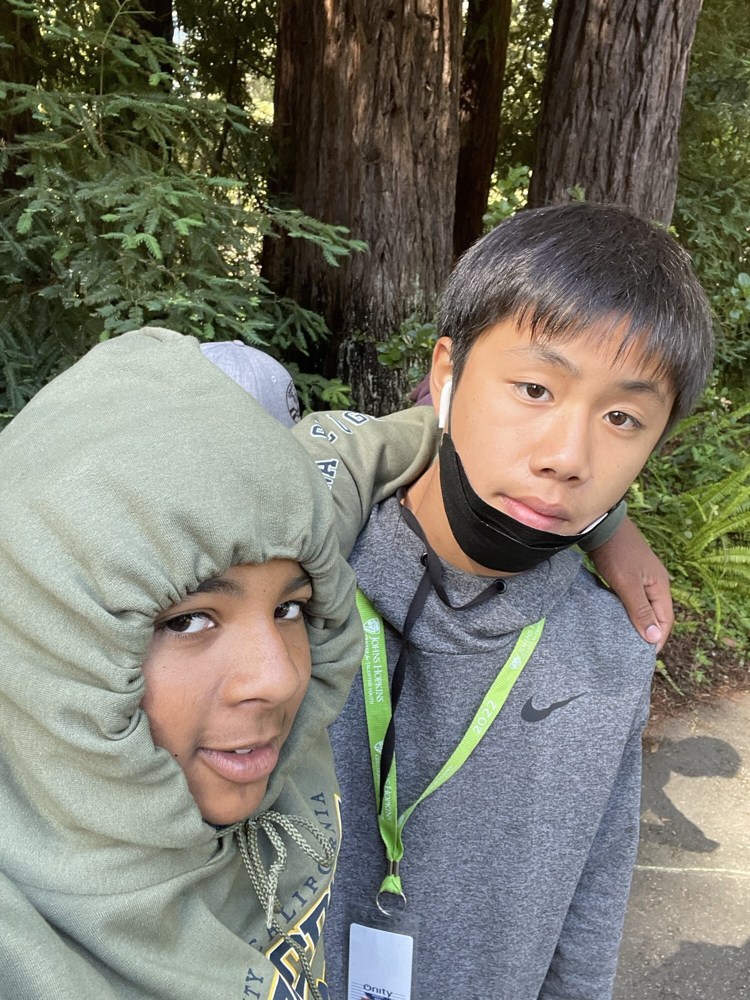
Outside with a friend at CTY.
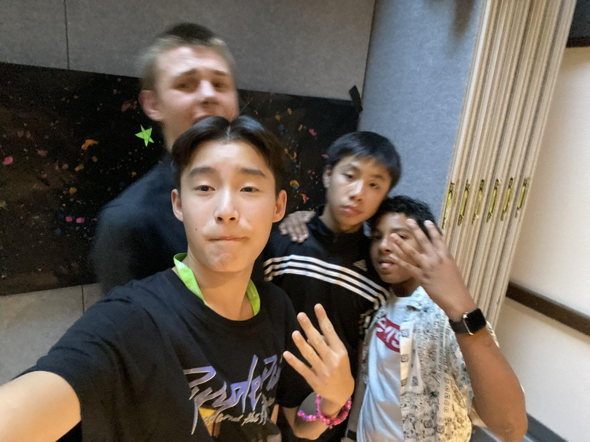
A selfie with friends at CTY.
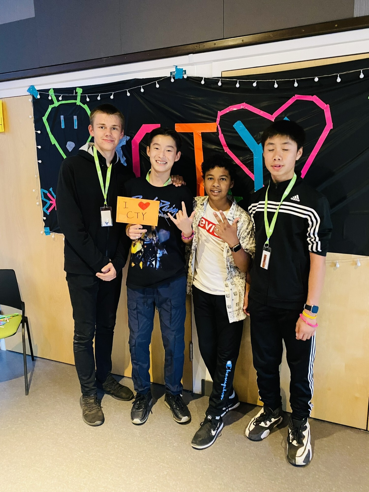
The CTY group, July 2022.
The build side
For the projects themselves, every build has a full journal on SPF Maker Club.